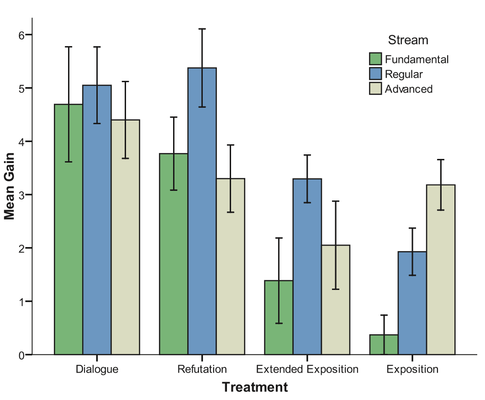

Saying the wrong thing
Saying the wrong thing: improving learning with multimedia by including misconceptions
Muller, D. A., Bewes, J., Sharma, M. D., & Reimann, P. (2008). Journal of Computer Assisted Learning, 24(2), 144–155.
What it says
- This article describes the results of a randomized-controlled study testing the effects of four different approaches to designing non-interactive instructional videos on students' understanding of Newton's First and Second Laws of Motion.
- Many students hold stubborn misconceptions on this topic, but it was not clear whether instructional videos that directly engaged these misconceptions would be effective or if such information would merely add to students' cognitive load and fail to improve their learning.
- The four conditions tested were:
- "Exposition" — a direct, lecture-style presentation of the physics concepts
- "Extended Exposition" — the same information as Exposition, but with additional interesting information intended to raise interest
- "Refutation" — the same information as Exposition, but with a common misconception stated and refuted
- "Dialogue" — similar information to Refutation, but presented through a student-tutor dialogue
- See Appendix for the scripts used.

Average learning gains are shown by experimental condition and by physics track (from lowest prior knowledge, fundamental, to highest, advanced). The overall effect is that students learn significantly more from the two misconceptions-focused videos than the two that did not engage common misconceptions (Figure 2 from Muller et al.).
What we might learn from it
- As illustrated in the figure above, the two videos featuring misconceptions were significantly more effective than the two videos without misconceptions. And, although the absolute learning gains were largest for students with the least in-coming physics knowledge, the misconceptions-focused videos were as or more effective across all three physics tracks tested.
- Misconceptions can seriously impede learning. They are also, by their nature, difficult for students to overcome. This study shows that even non-interactive video can be an effective tool to combat misconceptions and bring about conceptual change in students.
Appendix
Example scripts from the four experimental conditions (Note that, while the Exposition text is only written out in the first column, all conditions included this description).
| Exposition | Extended Exposition |
Refutation | Dialogue |
|---|---|---|---|
| While the ball is in the air (we will ignore air friction because it is so small) only one force acts on the ball throughout its flight. This is the force of gravity which is constant and downwards, accelerating the ball in the downward direction. After being thrown up, a ball travels slower and slower upwards, stopping momentarily before speeding up in the downward direction. Then it meets with the juggler’s hand again and the process repeats | If you are learning to juggle it might be nice to have the balls fall a bit slower to give you more time to coordinate your efforts catching and throwing the balls. Unfortunately if you use lighter balls, they won’t fall any slower than heavy ones. Even though the force of gravity on them is less, it takes proportionately less force to accelerate them by Newton’s second law, so there is no net effect and the balls accelerate at the same rate whether they are heavy or light. The only advantage of using light balls is that you won’t expend as much energy throwing them into the air. Something you might try to make learning to juggle easier would be juggling tissues or scarves. These items have significant air resistance so they don’t accelerate downwards at the same rate as balls. Most beginners start out this way and work up to more aerodynamic and even dangerous objects later. | A misconception is that as the ball travels upwards, there is an upward force from the juggler’s hand that stays with the ball even after the ball has lost contact with the juggler’s hand – a force in the ball to keep it moving. This force gradually dies away until it balances gravitational force at the peak. Then gravity takes over and pulls the ball downward. However, there is no upward force on the ball after it has left the juggler’s hand and gravity is acting all the time. In this misconception we are simply confusing velocity with force | Tutor: Can you tell me what happens when a single ball goes around once? Student: Well the juggler’s hand gives the ball a force that drives it upward against gravity – but as it goes up that force dies away, right? So at the top then, it perfectly balances gravity – then gravity wins and the ball falls downward. Tutor: Hmm... you said that the force from his hand and gravity are equal at the top. Student: Yeah. Tutor: Then why doesn’t the ball keep doing what it’s doing? Student: I don’t know. Maybe air resistance – no. I mean they’re only balanced for a split second – so then gravity wins – I don’t know, I must be missing something. Tutor: Does it make sense that the juggler’s hand can put a force on the ball after it leaves his hand? Student: No... not really. But the ball’s still going up, isn’t it? Doesn’t that mean there’s a force? |